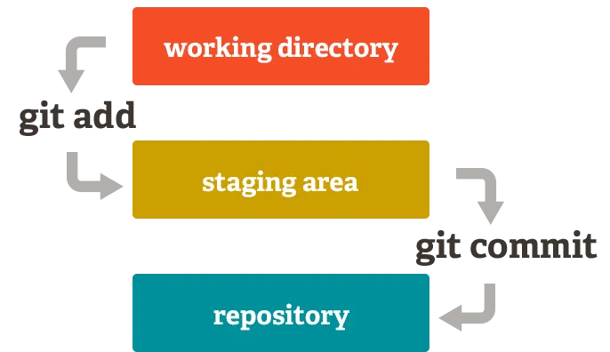

Intro to Git for Version Control#
An introduction to basics of Git.
The notes below are adapted from our textbook and Pythia Foundations.
Overview:#
Version control is a powerful way to organize, back up, and share with collaborators your research computing code. A Verson control system keeps track of a set of files and saves snapshots (i.e. versions, commits) of the files at any point in time. Using version control allows you to confidently make changes to your code (any any other files), with the ability to roll back to any previous state. This help avoid filling our directories up with files that look like this:
my_code.py
my_code_version2.py
my_code_version2B-RPA-edit.py
my_code_FINAL_VERSION.py
my_code_THIS_IS_ACTUALLY_THE FINAL VERSION.py
Version control also allows you to share code with collaborators, make simultaneous edits, and merge your changes in a systematic, controlled way.
Version control has been used for a long time in software development. More recently, it has become an essential part of modern data and computational science. Our strong recommendation is that all of your research code be stored in a version control system.
The tool we will be using for version control is called Git. Git is incredibly powerful–it also has a somewhat steep learning curve. Fortunately, in this class, we will only be using a small subset of what git can do, avoiding the more complex aspects.
For a full-length tutorial, we recommend the article Version Control with Git on Software Carpentry website. Here we simply enumerate the most common git commands.
GitHub#
GitHub#
GitHub is a web-based platform for the dissemination of free and open-source software.
GitHub provides the following:
Version control for free and open-source software and other digital assets
Project discussion forums
DevOps to facilitate building and testing software
Bug reporting, patching, and tracking
Documentation hosting
An environment that fosters collaboration
Although GitHub can host any digital asset, the most common use case for GitHub is for individuals or organizations to house repositories of free and open-source software.
You can set up a free user account on GitHub.
GitHub Repositories#
GitHub gives the following explanation of a repository:
A repository is usually used to organize a single project. Repositories can contain folders and files, images, videos, spreadsheets, and data sets – anything your project needs. Often, repositories include a
READMEfile, a file with information about your project. GitHub makes it easy to add one at the same time you create your new repository. It also offers other common options such as a license file.
In short, it is a collection of files. Each GitHub repository has an owner, which could be an individual or an organization. Repositories can also be set to public or private, determining who can see and interact with it. While a repository can simply store files, GitHub is designed with collaboration in mind. Three key collaborative tools in GitHub are:
Issues: report a bug, plan improvements, or provide feedback to others working on the repository.
Discussions: post ideas or other conversations that are not as specific or actionable as an Issue.
Pull requests: We will go into the specifics later, but a Pull request allows a user to propose a change to any of the files within a repository.
All of the Python packages covered (e.g. Numpy and Xarray) have associated GitHub repositories, as well as Python itself.
As you can see by the recent timestamps, these repositories are actively changing; this reflects the adaptability of the open-source software ecosystem surrounding Python.
Finally, we introduce an important concept that is vital to your understanding when working with GitHub. It is the source of GitHub’s power, as well as much of its complexity. GitHub repositories are distributed; in the general case, there is more than one repository for any project. In fact, repositories can come and go at any time, created and deleted as need dictates. Creating new repositories from existing ones, synchronizing them, and managing them are the topics of later sections. For now, it is only important to understand that for a GitHub-managed project, there is typically one “official” repository, often called the “upstream” repository, and it lives on GitHub.com. There may be any number of copies of the “official” repository, known as forks (or origins, if it is owned by you), that also reside on GitHub.com. Repos that are hosted on GitHub.com are referred to as remotes. In addition to the remotes, there may be one or more copies of the remotes on your desktop or laptop computer that are referred to as locals. A conceptual diagram of the various repos is shown in the image below.

GitHub Workflows#
GitHub, together with Git, are powerful tools for managing and collaborating on all kinds of digital assets, such as software, documentation, and even manuscripts for research papers. Like other complex software environments, often these tools can be employed in many different ways to accomplish the same goal. In order to effectively and consistently use Git and GitHub, over the years a variety of best practices have evolved for supporting different modes of collaboration. Collectively these different models, or recipes, are referred to as workflows.
A typical sequence of workflow steps consists of the following:
A contributor clones a personal remote repository, creating a local copy
The contributor creates a new branch in their local repository
The contributor makes changes to the branch and commits them to their local repository
The contributor pushes the branch to a remote repository
The contributor submits a Pull Request via GitHub
The sequence of steps outlined above provides a general framework for submitting a PR. But the precise set of steps is highly dependent on the choice of workflow for a given project. Typically there are two commonly used workflows: The Git Feature Branch Workflow and the Forking Workflow. The former is simpler and often used by teams when everyone on the team is an authorized contributor to the destination repository. I.e. all of the contributors have write access to the remote repository hosted by GitHub. The latter is typically what is needed to contribute to external projects for which the contributor is not authorized (i.e. does not have write access) to make changes to the destination repository.
There are many similarities in the two workflows. We describe the Forking Workflow as an example and include the steps necessary to make a PR.
Forking Workflow#
The key idea behind both workflows (i.e. Git Feature Branch Workflow and Forking Workflow) is that all development (all changes) should take place on a dedicated Git feature branch, not the main (historically referred to as master) branch. The motivation behind this is that one or more developers can iterate over a feature branch without disturbing the contents of the main branch. Avoiding making edits directly on the main branch is considered best practice for most workflows and projects!
Git branches allow for non-linear or differing revision histories of a repository. At a point in time, you can split your repository into multiple development paths (branches) where you can make different commits in each, typically with the ultimate intention of merging these branches and development changes together at a later time. Some reasons for wanting to split your repository into multiple branches is to experiment with different methods of solving a problem (before deciding which method will ultimately be merged) and to work on different problems within the same codebase (without confusing which code changes are relevant to which problem).
First of all, set up your username and email:
git config --global user.name "Yutian Wu"
git config --global user.email "yutianwu@ldeo.columbia.edu"
Fork the official upstream remote repository#
In a fork, you create a copy of an existing repository, but store it in your own personal GitHub organization (recall that when you create a GitHub account, the organization name is your GitHub user ID).
As an example, we intend to make some changes to the Project Pythia Sandbox repo, that ultimately we’ll submit to the original repository as a Pull request.
Notice at the top right of the repo, there is a Fork button.
Click on it and create a new fork in your personal GitHub organization.
You now have a copy (essentially a clone) of the forked repository, which is now owned by you.
You could, at this point, select one of the files in the repository and use GitHub’s built-in editor to make changes to these text-based files. However, the typical use case that leverages the collaborative power of GitHub and its command-line cousin, git, involves cloning your forked copy of the repo to your local computer, where you can then perform your edits, and (in the case of software) test them on your system.
Clone the personal remote repository#
Cloning a remote repository can be done with the git command line
tools and the general form of the command looks like this:
git clone repository-url local-directory-name
Where repository-url is the URL for the GitHub repo that you want
to clone, and local-directory-name is the directory path on your
local machine into which you want to create the clone. The local
directory need not already exist. The clone command will create the
local directory for you. If you don’t know the URL for your
repository, navigate your web browser to your GitHub repository,
and click on the Code button. The URL will be displayed.
git clone https://github.com/yutianwuldeo/github-sandbox.git
Replace with your GitHub username.
Note, we did not specify a local-directory_name here, so git will
use the base name of the repository_url, “github-sandbox” as
the local directory.
Start with the main branch#
Continuing with our example above, make sure you are on the main branch and that it is up to date with the remote repository main:
cd github-sandbox
git checkout main
git pull
You should see output that looks like:
Already on 'main'
Already up to date.
You can verify the branch by:
git branch
Now inspect this repository with
git status
which will always give you information about the current git repo. Try it!
Create a new branch#
You may have noticed that the file sample.txt in the github-sandbox repository contains a typo. Here we’re going to fix the error and save it locally.
Before we start editing files, the first thing to do is to create a new branch where we can safely make any changes we want. While there’s nothing stopping us from making changes directly to the main branch, it’s often best to avoid this! The reason is that it makes collaboration trickier.
Let’s create and checkout a new branch in one line:
git checkout -b fix-typo
You can verify the branch by:
git branch
Now try your new best friend again:
git status
You should see something like this:
On branch fix-typo
nothing to commit, working tree clean
This tells us that we have switched over to a new branch called fix-typo, but there are not (yet) any changes to the files in the repo.
Make changes and commit#
Now do the following:
Using your favorite text editor, open the file
github-sandbox/sample.txt.Replace the word
Fxingwith the much more satisfyingFixing.Save the changes.
Revisit your new best friend
git status. It should now show something like this:
On branch fix-typo
Changes not staged for commit:
(use "git add <file>..." to update what will be committed)
(use "git restore <file>..." to discard changes in working directory)
modified: sample.txt
no changes added to commit (use "git add" and/or "git commit -a")
Here git is telling us that the file sample.txt does not match what’s in the repository.
Of course we know what changed in that file because we just finished editing it. But here’s a quick and easy way to see the changes:
git diff
which, by default, compares files between current version and last commit, and should show you something like this:
diff --git a/sample.txt b/sample.txt
index 4bc074c..edc31c0 100644
--- a/sample.txt
+++ b/sample.txt
@@ -4,6 +4,6 @@ We can use it to demonstrate making pull requests or raising issues in a GitHub
One good way to contribute to a project is to make additions and/or edits to documentation!
-Fxing something as simple as a typo is a great way to get started as a contributor!
+Fixing something as simple as a typo is a great way to get started as a contributor!
Or, consider adding some more content to this file.
We can see here that git diff finds the line(s) where our current file differs from what’s in the repo, along with a few lines before and after for context.
The next step is to add our changes to the “official” history of our repo. This is a two-step process (staging and committing).

Staging#
Before we make a commit, we must first stage our changes. Think of staging simply as “getting ready to commit”. The two-step process can help avoid accidentally committing something that wasn’t ready.
To stage our changes, we use git add like this:
git add sample.txt
and now our new best friend tells us
On branch fix-typo
Changes to be committed:
(use "git restore --staged <file>..." to unstage)
modified: sample.txt
Now we see that all-important line Changes to be committed, telling us the contents of our staging area.
If you made a mistake (e.g., staged the wrong file), you can always unstage using git restore as shown in the git status output. Nothing is permanent until we commit!
(And if you accidentally commit the wrong thing? Don’t worry, you can always “go back in time” to previous commits – see below!)
Committing#
It’s time to make a commitment. We can now permanently add our edit to the history of our fix-typo branch by doing this:
git commit -m 'Fix the typo'
Every commit should have a “message” that explains briefly what the commit is for. Here we set the commit message with the -m flag and chose some descriptive text. Note, it’s critical to have those quotes around 'Fix the typo'. Otherwise the command shell will misinterpret what you are trying to do.
Now when we do git status we see
On branch fix-typo
nothing to commit, working tree clean
And we’re back to a clean state! We have now added a new permanent change to the history of our repo (or more specifically, to this branch of the repo).
Going back in time#
Each commit is essentially a snapshot in time of the state of the repo. So how can we look back on that history, or revert back to a previous version of a file?
A simple way to see this history of the current branch is this:
git log
You’ll see something like this:
commit b880aadaf75fca8adc7c6a858c3dfeefa23a1351 (HEAD -> fix-typo)
Author: Yutian Wu <yutianwu@ldeo.columbia.edu>
Date: Thu Sep 12 14:23:29 2024 +0000
Fix the typo
commit 79656ab5dc79305816404265ac870734096adbb9 (origin/main, origin/HEAD, main)
Merge: ce9b18a 86003b3
Author: Julia Kent <46687291+jukent@users.noreply.github.com>
Date: Fri Jul 28 14:55:53 2023 -0600
Merge pull request #13 from jukent/jukent-patch-1
Add actions to sandbox for warning and closing stale issues.
commit 86003b3686f90e0a944d3d1382606470a529014f
Author: Julia Kent <46687291+jukent@users.noreply.github.com>
Date: Thu Jul 27 14:37:25 2023 -0600
Update .github/workflows/stale.yml
Co-authored-by: Brian Rose <brose@albany.edu>
commit 16f11bdabc497e075efac0ba1f929f9fd164fd2d
Author: Julia Kent <46687291+jukent@users.noreply.github.com>
Date: Thu Jul 27 14:07:47 2023 -0600
Update stale.yml to rm tag
commit c4d6a5055604ad669d18dc6d624e1dbfd4929f6a
Author: Julia Kent <46687291+jukent@users.noreply.github.com>
Date: Thu Jul 27 14:07:06 2023 -0600
rm tag from comment.yml
commit 330a26049ec403774726bd47ea70c50a2efa8d4b
Author: Julia Kent <46687291+jukent@users.noreply.github.com>
:
which shows the last few commits on this branch, including the commit number, author, timestamp, and commit message. You can page down to see the rest of the history or just press Q to exit git log!
Every commit has a unique hexadecimal checksum code like 7dca0292467e4bbd73643556f83fd1c52b5c113c. Your history will look a little different from the above!
Let’s say you want to retrieve the file sample.txt from the previous commit. Two possible reasons why:
You just want to take a quick look at something in the previous commit, but then go back to the current version. That’s what we’ll do here.
Maybe you don’t like the most recent commit and want to do some new edits starting from the previous commit – in effect, undoing the most recent commit and going back in time. The simplest way to do this is to create a new branch starting from the previous commit. We’ll cover branches more fully in the next lesson.
To retrieve the previous commit, just use git checkout and the unique number code which you can just copy and paste from the git log output:
git checkout 35fcbd991f911e170df550db58f74a082ba18b50
You may see output that looks like this:
Note: switching to '35fcbd991f911e170df550db58f74a082ba18b50'.
You are in 'detached HEAD' state. You can look around, make experimental
changes and commit them, and you can discard any commits you make in this
state without impacting any branches by switching back to a branch.
If you want to create a new branch to retain commits you create, you may
do so (now or later) by using -c with the switch command. Example:
git switch -c <new-branch-name>
Or undo this operation with:
git switch -
Turn off this advice by setting config variable advice.detachedHead to false
HEAD is now at 35fcbd9 Close docstring quote on sample.py
(the details may vary depending on what version of git you are running).
By detached HEAD, git is telling us that we are NOT on the most recent commit in this branch.
If you inspect sample.txt in your editor, you will see that the typo Fxing is back!
As the git message above is reminding us, it’s possible to create an entirely new branch with changes that we make from this point in the history using git switch -c. But for now, let’s just go back to the most recent commit on our fix-typo branch:
git checkout fix-typo
Push the feature branch to the personal remote repository#
After running git commit your changes have been captured in your
local repository. But most likely only you can see them, and if
your local file system fails your changes may be lost. To make your
changes visible to others, and safely stored on your remote GitHub
repository, you need to push them by using git push origin <branch-name>.
The git push origin <branch-name> command transfers commits from your local repository to a remote repository.
In Git, origin is the default name given to the remote repository from which your local repository was cloned. You can verify origin by:
git remote show origin
Now you can push the fix-typo branch to origin:
git push origin fix-typo
In the remote repo, you can see a notification like the following -
fix-typo had recent pushes 23 seconds ago
In order to push data to GitHub from the hub, you will need to set up GitHub authentication. gh-scoped-creds should be already setup on your 2i2c managed JupyterHub, and we shall use that to authenticate to GitHub for push / pull access.
To do that, open a terminal in JupyterHub, run gh-scoped-creds and follow the prompts.
Alternatively, in a notebook, run the following code and follow the prompts:
import gh_scoped_creds
%ghscopedcreds
You should now be able to push to GitHub from the hub! These credentials will expire after 8 hours (or whenever your JupyterHub server stops), and you’ll have to repeat these steps to fetch a fresh set of credentials. Once you authenticate, you’ll be provided with a link to a GitHub App that you have to install on the repositories you want to be able to push to from this particular JupyterHub. You only need to do this once per JupyterHub, and can revoke access any time. You can always provide access to your own personal repositories, but might need approval from admins of GitHub organizations if you want to push to repos in that organization.
Make a Pull Request#
Once the new feature branch has been pushed to the contributor’s personal repository, a Pull Request can be created that asks the maintainers of the upstream repository to merge the contents of the feature branch on the contributor’s repository into the main branch on the upstream repository. Specifically, the steps are the following, performed on the upstream remote:
Click on “Pull Requests” in the top navigation bar
Click on “New Pull Request”
Under “Compare changes”, make sure that
baseis set tomain, andcompareis set to the name of your feature branch,fix-typoClick on “Create Pull Request”
A Pull Request window should open up. Provide a descriptive title, and any helpful comments that you want to communicate with the reviewers
Click on “Create Pull Request” in the Pull Request window.
Summary#
Version control is an important tool for working with code files (or anything that is saved as plain text).
git is the most common version control software in use today.
git init: initiate a new repogit status: see what branch we’re on and what state our repo is ingit log: see the commit history of our branchgit add file: stage a file for a commitgit commit -m 'message/comment': create a new commit with the staged filesgit checkout: switch between branches (use the-bflag to create a new branch and check it out)git diff commit-one commit-twoandgit diff branch-one..branch-two: compare files between current version and last commit (default), between two commits, or between two branches.git pushandgit pull: export or input changes between your local branch and a remote repository (e.g. hosted on GitHub)